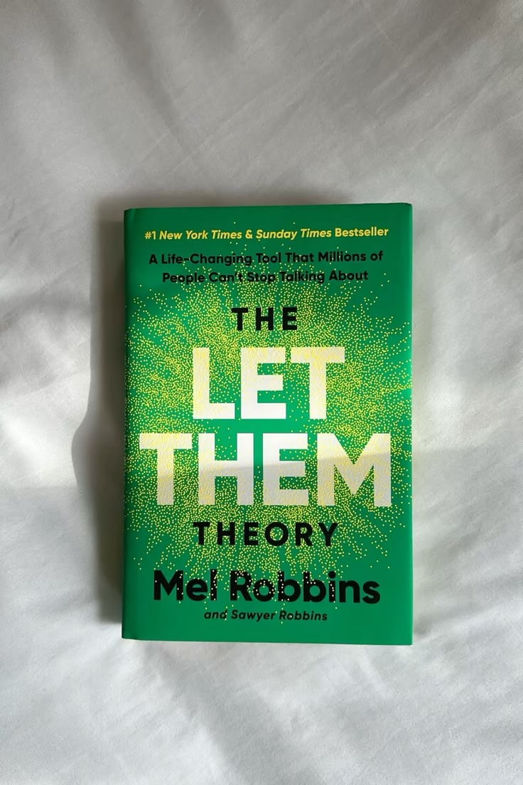
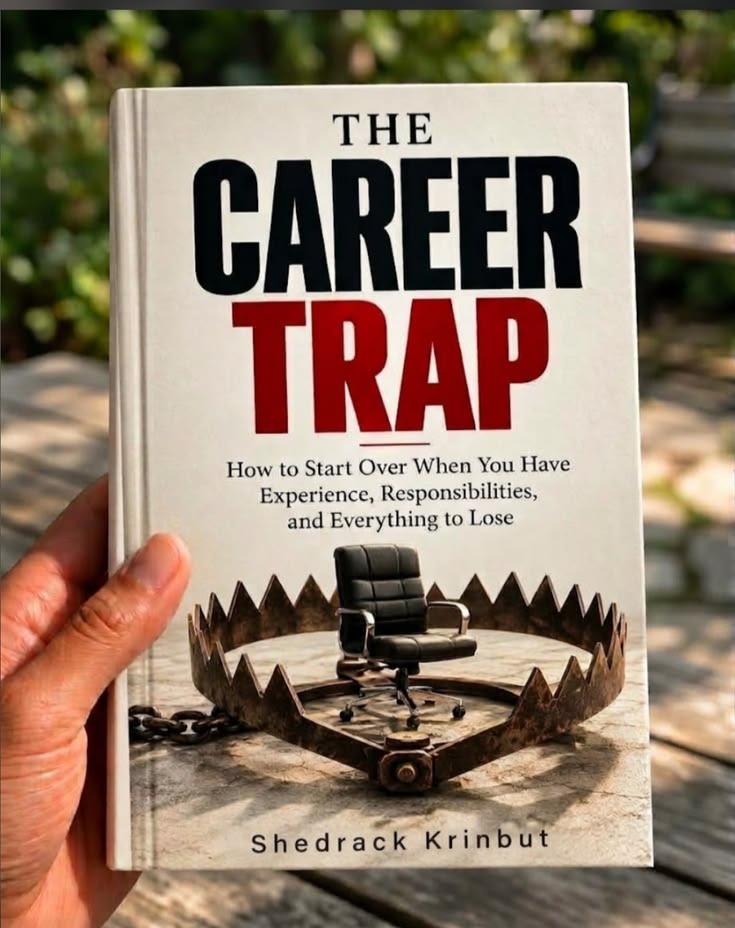
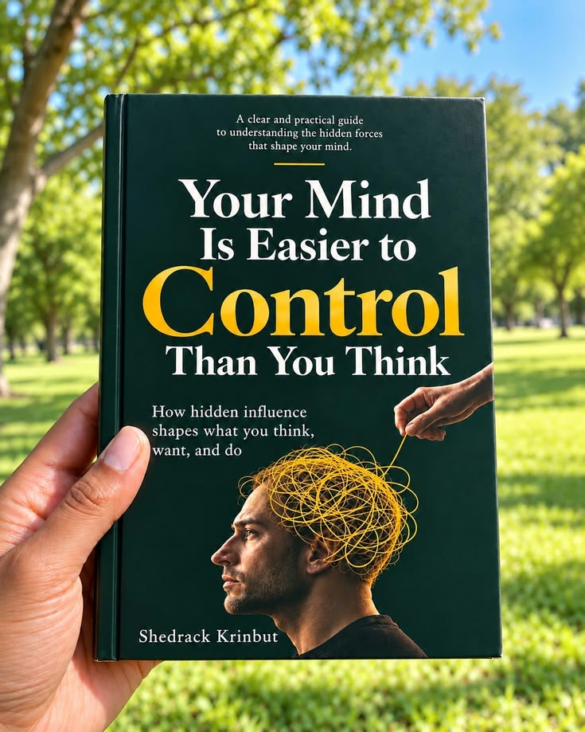
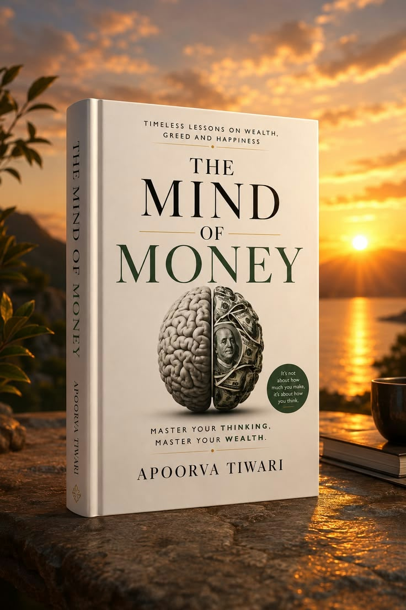
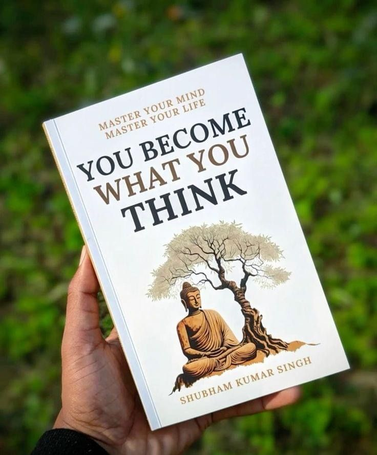
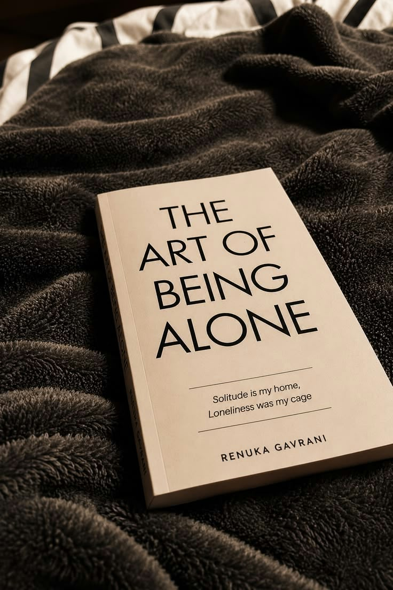

Smart Money Digest
Tip for the week
Save a small amount the day you income arrives before you spend on anything else.






Save a small amount the day you income arrives before you spend on anything else.
Silence isn't always weakness.Sometimes, its the strongest expression of confidence and emotional maturity.
We often live as though tomorrow is guaranteed, forgetting that the presenht is the only moment we truly own.
The more you seek ever4yonews approval ,the more you risk losing your autyhencity and personal identity
Having more options doesnt mean gr4eateer freedom .Sometimes too many choices lead to anxiety and dissastifaction.
Learn to care deeply without becominhg emotionally dependent on people ,situations or outcomes.
Your future isnt shaped by occasional big decisions alone but by the small actions you repeat daily.